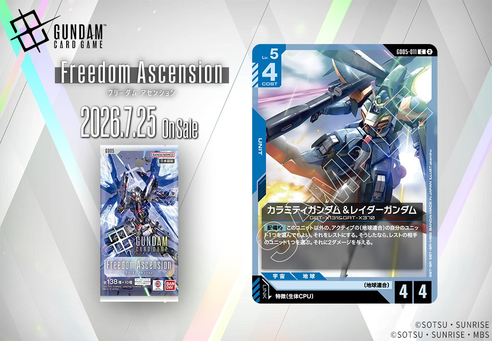
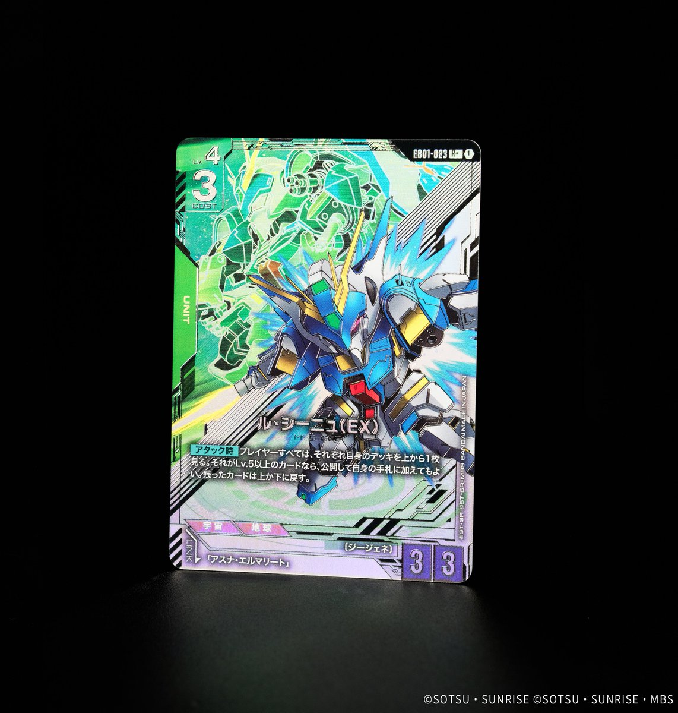
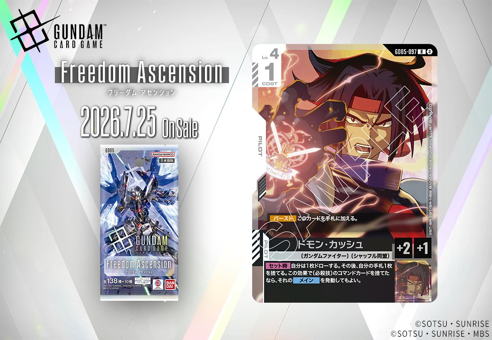
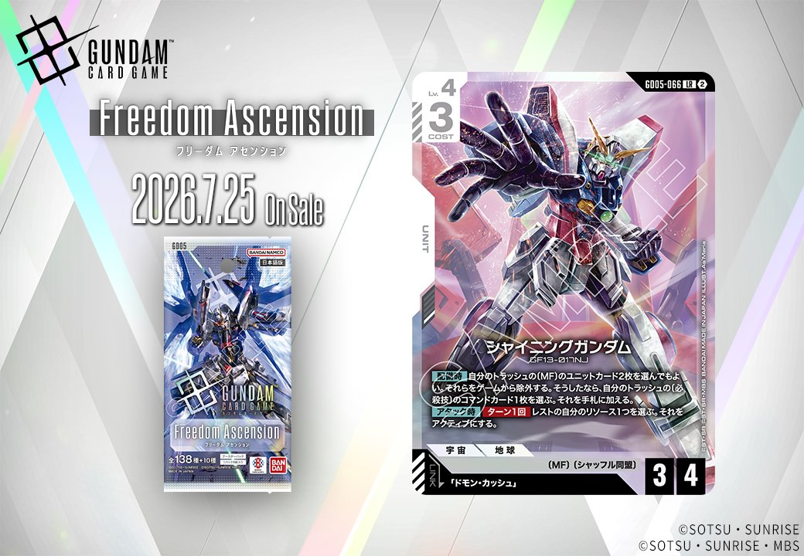
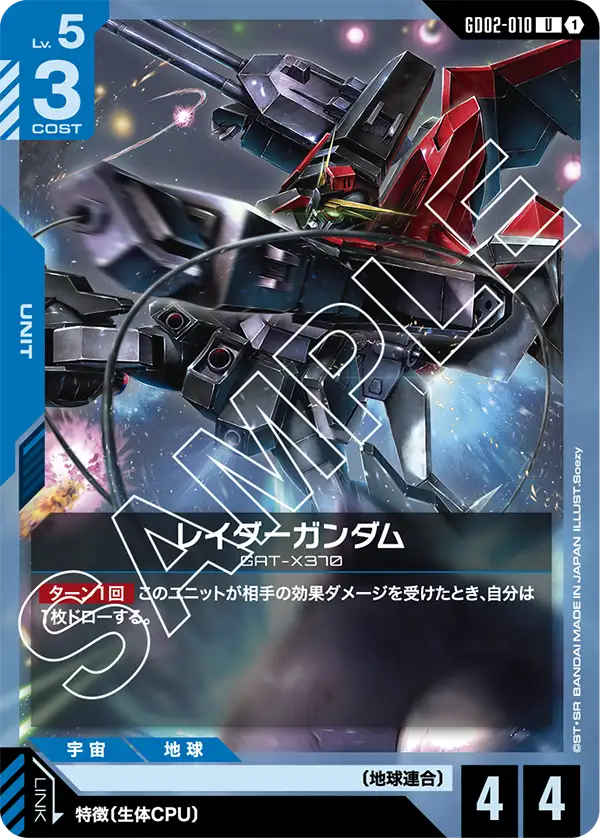

2026年7月25日発売の「Freedom Ascension」から新たに5枚のカードが公開されました。今回は白色のシャイニングガンダム(GD05-066)とドモン・カッシュ(GD05-097)が同日公開でリンク条件が成立する組合せとして登場し、青色のカラミティガンダム&レイダーガンダム(GD05-011)は特徴に生体CPUを持つPILOTとのリンクを持つUNIT、さらに白色COMMAND「シャイニングフィンガー」(GD05-120)と緑色UNIT「ル・シーニュ（EX）」(EB01-023)が収録されます。

カラミティガンダム&レイダーガンダム (GD05-011)
| 色 | 青 | タイプ | UNIT |
| Lv | 5 | コスト | 4 |
| AP | 4 | HP | 4 |
| 特徴 | 〔地球連合〕、〔生体CPU〕 | ||
| リンク条件 | 特徴に生体CPUを持つPILOT | ||
効果: 【配備時】このユニット以外の、アクティブの〔地球連合〕の自分のユニット1つを選んでもよい。それをレストにする。そうしたなら、レストの相手ユニット1つを選ぶ。それに2ダメージを与える。
Lv.5コスト4で配備時に自分の地球連合ユニットをレストにすることで、レストの相手ユニット1体に2ダメージを与える青のユニット。同日発売の生体CPUパイロット「オルガ＆クロト＆シャニ」とリンク可能で、リンク時効果でブロッカーをレストにした後、この配備時効果で追撃できる点が強力。自分のユニットをレストにする必要があるため、フォビドゥンガンダムのようなブロッカーや既にアタック済みのユニットと組み合わせることで、デメリットを軽減しつつ相手の脅威を排除できる除去手段として機能する。

ル・シーニュ（EX） (EB01-023)
| 色 | 緑 | タイプ | UNIT |
| Lv | 4 | コスト | 3 |
| AP | 3 | HP | 3 |
| 特徴 | ジージェネ | ||
| リンク条件 | アスナ・エルマリート | ||
効果: 【アタック時】プレイヤーすべては、それぞれ自身のデッキを上から1枚見る。それがLv.5以上のカードなら、公開して自身の手札に加えてもよい。残ったカードは上か下に戻す。
ル・シーニュ（EX）は、アタック時に全プレイヤーがデッキトップを確認し、Lv.5以上なら手札に加えられる対称的な効果を持つ緑COST3ユニット。自分も相手も恩恵を受ける可能性があるため、高レベルユニットを多く採用したデッキで使うか、相手より確実に高レベル比率が高い構築で差をつける戦略が考えられる。アスナ・エルマリートとのリンクが可能で、緑の中速ビートダウンの選択肢として、ウイングガンダムゼロやウイングガンダムといった高採用率カードと共存できるスペックを持つ。

シャイニングフィンガー (GD05-120)
| 色 | 白 | タイプ | COMMAND |
| Lv | 4 | コスト | 1 |
| 特徴 | 〔シャッフル同盟〕、〔必殺技〕 | ||
| リンク条件 | 「シャイニングガンダム」 | ||
効果: 【バースト】 このカードを手札に加える。【メイン / アクション】 HP4以下の相手のユニット1つを選ぶ。 それをレストにする。 その後、カード名に「シャイニングガンダム」 を含む自分のユニット1つを選んでもよい。 このターン中、 それは《先制攻撃》を得る。
シャイニングフィンガーは、低コストでHP4以下の相手ユニットをレストにできるコマンドカード。バーストでの手札補充も可能で、「シャイニングガンダム」を含むユニットに《先制攻撃》を付与できる点が特徴的。 2026年7月発売予定の新カードのため現環境での実績はないが、コスト1で相手の低HPユニットを無力化しつつ自軍を強化する効果は、序盤から中盤にかけて有効に機能しそうだ。



ドモン・カッシュ (GD05-097)
| 色 | 白 | タイプ | PILOT |
| Lv | 4 | コスト | 1 |
| 補正 AP | 2 | 補正 HP | 1 |
| 特徴 | 〔ガンダムファイター〕、〔シャッフル同盟〕 | ||
効果: 【バースト】このカードを手札に加える。【セット時】自分は1枚ドローする。その後、自分の手札1枚を捨てる。この効果で〔必殺技〕のコマンドカードを捨てたなら、それのメインを発動してもよい。
ドモン・カッシュは手札の質を調整しながら〔必殺技〕コマンドを即座に発動できる白色パイロット。【セット時】の手札入れ替えで不要な〔必殺技〕を捨てることでそのメインを発動でき、シャイニングガンダムにリンクすれば、そのトラッシュ回収効果で〔必殺技〕を再利用する循環が生まれる。 バーストで手札に戻せるため、相手の除去に対しても再セットが可能で、〔必殺技〕の発動機会を複数回作れる息の長いカードだ。


シャイニングガンダム (GD05-066)
| 色 | 白 | タイプ | UNIT |
| Lv | 4 | コスト | 3 |
| AP | 3 | HP | 4 |
| 特徴 | 〔MF〕、〔シャッフル同盟〕 | ||
| リンク条件 | 「ドモン・カッシュ」 | ||
効果: 自分のトラッシュの〔MF〕のユニットカード2枚を選んでもよい。それらをゲームから除外する。そうしたなら、自分のトラッシュの〔必殺技〕のコマンドカード1枚を選ぶ。それを手札に加える。【アタック時】/ターン1回 レストの自分のリソース1つを選ぶ。それをアクティブにする。
シャイニングガンダムは、トラッシュの〔MF〕ユニット2枚を除外して〔必殺技〕コマンドを回収する配備時効果と、アタック時にレストのリソース1つをアクティブにする効果を持つLv.4白ユニット。リンク対象のドモン・カッシュはセット時に手札を入れ替えつつ、捨てた〔必殺技〕をその場で発動できるため、シャイニングガンダムで回収した〔必殺技〕を即座に活用する動きが可能。 リソースをアクティブにする効果により、3コストで配備しても実質的なテンポロスを抑えられ、〔MF〕〔シャッフル同盟〕特徴を活かした白単構築での中堅アタッカーとして機能する。
関連カード
-
 フォビドゥンガンダム(GD02-006)青系デッキ内採用率1.8% (71デッキ)
フォビドゥンガンダム(GD02-006)青系デッキ内採用率1.8% (71デッキ) -
 オルガ＆クロト＆シャニ(GD02-087)青系デッキ内採用率0% (1デッキ)
オルガ＆クロト＆シャニ(GD02-087)青系デッキ内採用率0% (1デッキ) -

レイダーガンダム(GD02-010)青系デッキ内採用率0% (1デッキ) -
 ウイングガンダムゼロ(GD01-024)緑系デッキ内採用率15.8% (611デッキ)
ウイングガンダムゼロ(GD01-024)緑系デッキ内採用率15.8% (611デッキ) -
 ウイングガンダム(ST02-001)緑系デッキ内採用率15.1% (585デッキ)
ウイングガンダム(ST02-001)緑系デッキ内採用率15.1% (585デッキ) -
 ヒイロ・ユイ(ST02-010)緑系デッキ内採用率15.1% (582デッキ)
ヒイロ・ユイ(ST02-010)緑系デッキ内採用率15.1% (582デッキ) -
 ピースミリオン(GD03-125)緑系デッキ内採用率14.6% (564デッキ)
ピースミリオン(GD03-125)緑系デッキ内採用率14.6% (564デッキ) -
 ザクⅡ(ST03-008)緑系デッキ内採用率12.7% (490デッキ)
ザクⅡ(ST03-008)緑系デッキ内採用率12.7% (490デッキ) -
 溢れる慈愛(GD01-118)白系デッキ内採用率41.1% (1586デッキ)
溢れる慈愛(GD01-118)白系デッキ内採用率41.1% (1586デッキ) -
 ガンダム・ルブリス(GD01-086)白系デッキ内採用率38% (1469デッキ)
ガンダム・ルブリス(GD01-086)白系デッキ内採用率38% (1469デッキ)